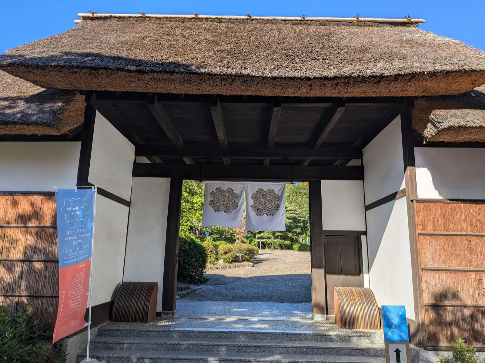

W Eiji ― 二人のワタナベエイジ
Artist
渡辺英司
Eiji Watanabe
美術家。1961年 愛知県生まれ。図鑑を切り抜く《名称の庭》の連作、言葉遊びのタイトル、場をつくる企画。経歴を見る
Scientist
渡辺英治
Eiji Watanabe
神経科学者。1962年 大阪市生まれ。基礎生物学研究所（岡崎）准教授。脳のナトリウムセンサー、メダカの視覚、錯視と深層学習。経歴を見る
Morning Monsters / W Eiji
あたりまえを あたりまえにしておかない
あたりまえじゃないことを あたりまえにする
同姓同名で、読みも同じ。美術家の渡辺英司（1961年、愛知県生まれ）と神経科学者の渡辺英治（1962年、大阪市生まれ）は、ともに愛知を拠点にしながら、2024年12月に初めて顔を合わせた。出会いの物語
パラレル年表Parallel Timeline
- 1961
愛知県に生まれる
- 1962
大阪市の下町に生まれる
- 2015頃
英司が「eijiwatanabe」の画像検索で、同姓同名の研究者と錯視画像を見つける
- 2024
12月、岡崎の基礎生物学研究所で初対面。2時間余り語り尽くす
1961 / 1962 から 2024年12月の出会いまで
展覧会 2025Exhibition



Art Obulist 2025 ワタナベエイジ展
「Morning Monsters / W Eiji」
- 会期
- 2025年11月1日（土）–12月7日（日）
- 会場
- 大倉公園 管理棟、休憩棟、中庭など（愛知県大府市）
- 主催
- アートオブリスト実行委員会、大府市
会期は終了しました。管理棟に神経科学者の展示、休憩棟に美術家の作品。公園の道が二つを結んだ。
展覧会の記録
対談「ふたりは策士」Artist Talk
司それが山の両端から全く関係ないところから登って、最後頂上で出会ってすれ違っていく瞬間ですかね。
治そうそう一瞬出会って、みたいな。そういう感じです。
展覧会の中で唯一、二人が同じ場に立って語った記録。大倉公園休憩棟 2025.11.22 sat、進行 山本さつき。
動画と章立て、抜粋
Newscontinuing W Eiji
愛知教育大学の夏期集中講義に二人で登壇
渡辺英司と渡辺英治が並んで登壇した、愛知教育大学の夏期集中講義の記録。
全 3 本の動画。第 1 回は 8 月 17 日に公開。
Art Obulist 公式 YouTube チャンネルで全編（1時間25分）が視聴できます。
ニュース一覧